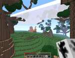
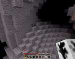
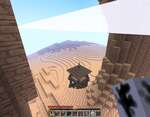
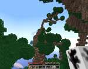
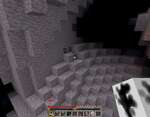
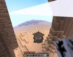
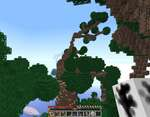
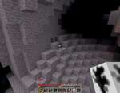
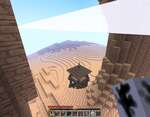
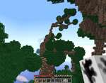

O čem hra je
Opensourcová alternativa ke hře Minecraft. Narozdíl od něj umožňuje různé formy od sandboxu bez cíle po jednoúčelové hry typu vyhýbej se vagónům.
Tipy a triky
- Projděte si módy, ale pozor na viry.
- Mě osobně vyhovuje standardní Minetest sandbox s malým množstvím bloků, Voxelibre umí být zajímavější, ale množství funkcí mě odrazuje od hry samotné.
- Hrajte s přáteli
- Zkuste si upravit nějaký mód (stačí textura), nebo rovnou vytvořte něco nového, pěkný návod je například zde
Hodnocení
- Klady:
- Sandboxová hra - nikdo mě nenutí něco dělat či nedělat
- Větší variabilita než Minecraft
- Menší HW požadavky, mohu hrát na starém železe s kamarády
- Zápory:
- Občas mě omrzí, odpočinu si a zase se vrhnu do stavění
Hardwarové požadavky
| Součást | Minimum | Doporučeno |
|---|---|---|
| Procesor | Single-core 1GHz | Dual-core 2GHz |
| Grafická karta | Jakákoliv OpenGL | Jakákoliv OpenGL |
| Paměť RAM | 512MB | 2GB |
| Disk | 512MB | 1GB |
Obrázky ze hry

 







